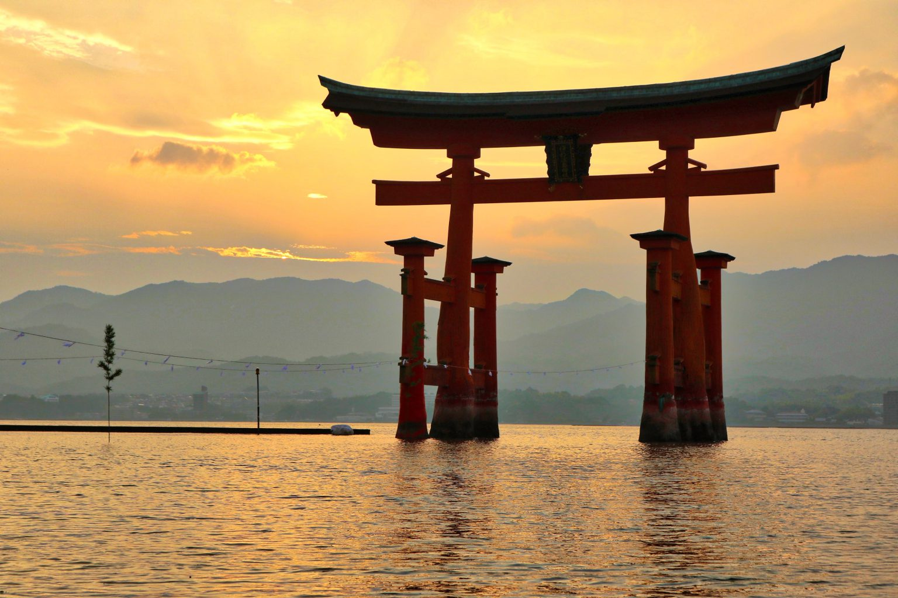
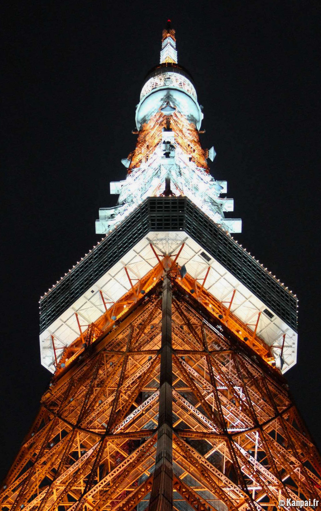

O Japão é conhecido por sua rica herança cultural que mistura tradição e tecnologia.
Ir para Idioma A língua oficial é o japonês. Ele tem uma estrutura gramatical diferente das línguas ocidentais e é conhecido por seu nível de formalidade e sutileza cultural — por exemplo, há diferentes formas de falar dependendo de com quem você está falando (amigo, chefe, desconhecido etc.).
O japonês usa três alfabetos principais, que geralmente são misturados numa mesma frase: Hiragana (ひらがな) Usado para palavras nativas do japonês, partículas gramaticais e terminações verbais.Tem 46 caracteres básicos.
Katakana (カタカナ) Usado para palavras estrangeiras, nomes de países, onomatopeias e ênfases. Também possui 46 caracteres, com formas mais angulosas.
Kanji (漢字) São ideogramas de origem chinesa, cada um com um ou mais significados. Representam substantivos, raízes de verbos e adjetivos. Existem milhares de kanjis, mas cerca de 2.000 são usados no dia a dia.
私はテレビを見ます。
(Watashi wa terebi o mimasu.)
“Eu assisto televisão.”
Ir para Gastronomia
Oyakodon (親子丼) é um prato tradicional da culinária japonesa, muito popular e reconfortante, cujo nome significa literalmente “tigela de pai e filho” – uma referência poética aos dois ingredientes principais: frango (pai) e ovo (filho).
Ir para TecnologiaO Japão é referência em inovação tecnológica. Um dos exemplos é a a Tokyo Tower é uma torre de comunicação e observação localizada no distrito de Minato, em Tóquio. Ela foi inaugurada em 1958 e inspirada na Torre Eiffel de Paris, mas é um pouco mais alta: tem 333 metros de altura. Apesar de sua semelhança com a torre francesa, a Tokyo Tower tem identidade própria: é pintada de branco e laranja, seguindo normas de aviação para estruturas altas no Japão.
Ir para Dados do Japão | População | Área | Idioma |
|---|---|---|
| 125 milhões | 377.975 km² | Japonês |